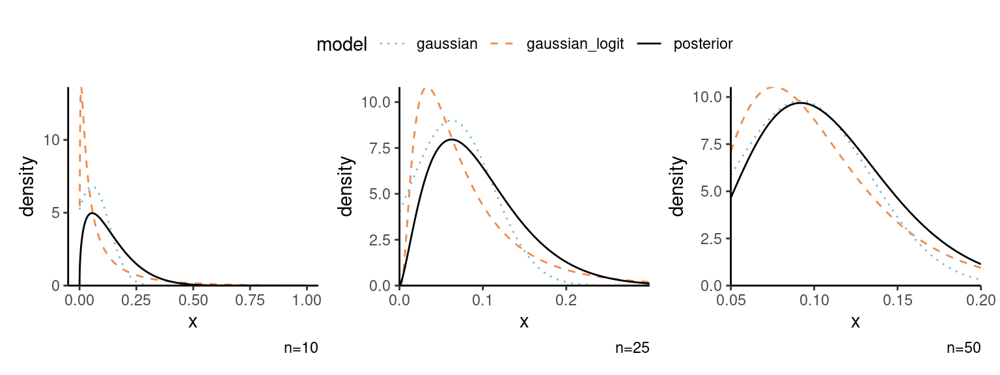

gauss_approx_beta <- function(n){
y <- floor(0.1*n)
alpha <- 0.5 + y
beta <- n - y + 0.5
# Gaussian approximation for theta
map <- (alpha - 1)/(alpha + beta - 2)
neghessian <- function(x, alpha, beta){
(alpha-1)/x^2 + (beta-1)/(1-x)^2
}
jm <- neghessian(x = map, alpha = alpha, beta = beta)
# Gaussian approximation for logit(theta) = vartheta
map_v <- qlogis(map)# qlogis((alpha-1)/(beta-1))
neghessian_v <- function(x, alpha, beta){
(beta - 1) * plogis(x) / (1 + exp(x))
}
jm_v <- neghessian_v(map_v, alpha = alpha, beta = beta)
dens_logit_gauss <- function(x){
exp(-log(x) - log(1-x) +
dnorm(x = qlogis(x), mean = map_v, sd = sqrt(1/jm_v), log = TRUE))
}
# Check that Jacobian is okay
# integrate(dens_logit_gauss, 0, 1)
xs <- seq(0, 1, length.out = 1001)
data.frame(x = xs,
posterior = dbeta(x = xs, shape1 = alpha, shape2 = beta),
gaussian = dnorm(x = xs, mean = map, sd = sqrt(1/jm)) / diff(pnorm(c(0,1), mean = map, sd = sqrt(1/jm))),
gaussian_logit = dens_logit_gauss(xs)) |>
tidyr::pivot_longer(cols = -1,
names_to = "model",
values_to = "density") |>
dplyr::mutate(model = factor(model))
}
# Marginal approximation to Bernoulli sample + beta(0.5, 0.5) prior
laplace_marginal <- function(n){
y <- floor(0.1*n)
alpha <- 0.5 + y
beta <- n - y + 0.5
# Gaussian approximation for theta
map <- (alpha - 1)/(alpha + beta - 2)
neghessian <- function(x, alpha, beta){
(alpha-1)/x^2 + (beta-1)/(1-x)^2
}
lapl_marglik <- dbinom(x = y, size = n, prob = map, log = TRUE) - lchoose(n,y) +
dbeta(map, 0.5, 0.5, log = TRUE) +
0.5*log(2*pi) - 0.5*log(neghessian(map, alpha, beta))
true_marglik <- lbeta(alpha, beta)-lbeta(0.5,0.5)
c(laplace = lapl_marglik, true = true_marglik)
}Solution 9
Exercise 9.1
We consider the accuracy of the Gaussian approximation to the posterior of a Bernoulli likelihood \(Y_i \sim \mathsf{binom}(1, \theta)\) with \(y =\sum_{i=1}^n y_i = \lfloor 0.1n\rfloor\) successes out of \(n\) trials, i.e., if 10% of the realizations are successes. To do so,
- Obtain a closed-form expression maximum a posteriori and the hessian of the log posterior for a conjugate \(\mathsf{beta}(a,b)\) prior.
- Repeat this with \(\vartheta = \log(\theta) - \log(1-\theta)\), using a change of variable.
- Plug in the approximations with a \(\theta \sim \mathsf{beta}(1/2, 1/2)\) prior for \(n\in\{25, 50, 100\}\) and plot the Gaussian approximation along with the true posterior. Is the approximation for \(\vartheta\) better for small \(n\)? Discuss.
- Compute the marginal likelihood and compare the approximation with the true value.
Solution.
- Consider the beta kernel \(k(\theta) = \theta^{\alpha-1}(1-\theta)^{\beta-1}\) for \(\alpha, \beta>0.\) The unnormalized log posterior to optimize and the negative of it’s Hessian matrix are \[\begin{align*} \log k(\theta) &\propto (\alpha-1)\log \theta + (\beta-1) \log (1-\theta),\\ \frac{\partial \log k(\theta)}{\partial \theta} &\propto \frac{\alpha-1}{\theta} - \frac{\beta-1}{1-\theta},\\ -\frac{\partial^2 \log k(\theta)}{\partial \theta^2} &= \frac{\alpha-1}{\theta^2} + \frac{\beta-1}{(1-\theta)^2}. \end{align*}\] By equating the gradient to zero, we find that the posterior mode is \(\widehat{\theta} = (\alpha-1)/(\alpha+\beta-2)\) if \(\alpha>1, \beta>1.\)
- If we write now instead \(\theta = \mathrm{expit}(\vartheta) \equiv \exp(\vartheta)/\{1+\exp(\vartheta)\}\) for \(\vartheta \in \mathbb{R},\) gradient and Hessian matrix become \[\begin{align*} \frac{\partial k(\vartheta)}{\partial \vartheta} &= \frac{\partial}{\partial \vartheta} (\alpha-1)\vartheta - (\beta-1)\log\{1+\exp(\vartheta)\} \\&=(\alpha-1) - \mathrm{expit}(\vartheta)(\beta-1) \end{align*}\] so that \(\widehat{\vartheta}_{\mathrm{MAP}}=\mathrm{logit}\{(\alpha-1)/(\beta-1),\) and \[\begin{align*} \jmath_{\vartheta}(\vartheta) = -\frac{\partial^2 k(\vartheta)}{\partial \vartheta^2} &= (\beta-1)\frac{\mathrm{expit}(\vartheta)}{1+\exp(\vartheta)} \end{align*}\] and the Jacobian of the change of variables gives \[\begin{align*} f_{\theta}(\theta) = \phi\{\log(\theta)-\log(1-\theta); \widehat{\vartheta}_{\mathrm{MAP}}, -1/\jmath_{\vartheta}(\widehat{\vartheta}_{\mathrm{MAP}})\} \theta^{-1}(1-\theta)^{-1} \end{align*}\]
- See Figure 1: the (truncated) Gaussian approximation is not particularly good, but the one for \(\vartheta\) has too much mass close to zero and markedly worst for small \(n\). The arcsin variance stabilization transformation would probably be a better choice here.
- The marginal likelihood is \(\mathrm{Beta}(\alpha, \beta)/\mathrm{Beta}(0.5, 0.5).\) We can simply plug-in the approximation in the formula to get the results of Table 1.
Code
library(ggplot2)
library(patchwork)
theme_set(theme_classic())
g1 <- ggplot(mapping = aes(x = x, y = density,
linetype = model,
color = model)) +
geom_line(data = gauss_approx_beta(10)) +
scale_y_continuous(limits = c(0, NA), expand = expansion()) +
MetBrewer::scale_color_met_d("Hiroshige") +
labs(caption = "n=25")
g2 <- ggplot(mapping = aes(x = x, y = density,
linetype = model,
color = model)) +
geom_line(data = gauss_approx_beta(25)) +
scale_y_continuous(limits = c(0, NA), expand = expansion()) +
scale_x_continuous(limits = c(0,0.3), expand = expansion()) +
MetBrewer::scale_color_met_d("Hiroshige") +
labs(caption = "n=50")
g3 <- ggplot(mapping = aes(x = x, y = density,
linetype = model,
color = model)) +
geom_line(data = gauss_approx_beta(50)) +
scale_y_continuous(limits = c(0, NA), expand = expansion()) +
scale_x_continuous(limits = c(0.05,0.2), expand = expansion()) +
MetBrewer::scale_color_met_d("Hiroshige") +
labs(caption = "n=100")
g1 + g2 + g3 + plot_layout(guides = 'collect') & theme(legend.position = "top")

| 10 | 25 | 100 | |
|---|---|---|---|
| laplace | -4.729 | -8.844 | -35.041 |
| true | -4.681 | -8.830 | -35.042 |
Exercise 9.2
Consider a simple random sample from a Bernoulli of size \(n\) with \(y\) successes and a \(\mathsf{beta}(a, b)\) conjugate prior. Compute the Laplace approximation to the posterior mean for samples of size \(n=10, 20, 50, 100\) and \(y/n \in \{0.1, 0.25, 0.5,1\}\) and \(a=b=1.\)
Solution.
We can apply Laplace’s approximation and write \[\begin{align*} \mathsf{E}_{{\Theta} \mid {Y}}(\theta) &= \frac{\int g({\theta}) p({y} \mid {\theta}) p( {\theta}) \mathrm{d} {\theta}}{\int p({y} \mid {\theta})p({\theta}) \mathrm{d} {\theta}} \end{align*}\]
The Hessian evaluated at the mode gives \(\mathbf{H}=(\alpha+\beta-2)^3/\{(\alpha-1)(\beta-1)\}.\) To simplify notation, take \(\alpha = y+a\) and \(\beta = n-y+b\): the Laplace approximation is therefore \[\begin{align*} \widehat{\mathsf{E}}_{{\Theta} \mid {Y}}(\theta)&= \left( \frac{(\alpha + \beta-2)^{3}}{(\alpha-1)(\beta-1)}\frac{\alpha(\beta-1)}{(\alpha + \beta-1)^{3}}\right)^{1/2} \widehat{\theta}_g \left( \frac{\widehat{\theta}_g}{\widehat{\theta}_{\mathrm{MAP}}}\right)^{\alpha-1} \left( \frac{1-\widehat{\theta}_g}{1-\widehat{\theta}_{\mathrm{MAP}}}\right)^{\beta-1} \\& = \frac{\alpha^{\alpha+1/2}}{(\alpha-1)^{\alpha-1/2}}\frac{(\alpha + \beta-2)^{\alpha + \beta-1/2}}{(\alpha + \beta-1)^{\alpha + \beta+1/2}} \end{align*}\] and taking \(a=b=1\), we retrieve \[\begin{align*} \widehat{\mathsf{E}}_{{\Theta} \mid {Y}}(\theta) = \frac{(y+1)^{y+3/2}n^{n+3/2}}{(y+1/2)^{y+1/2}(n+1)^{n+5/2}}. \end{align*}\]
# Posterior mean of beta-binomial
lap_post_mean <- function(alpha, beta){
exp((alpha+0.5)*log(alpha) - (alpha-0.5)*log(alpha-1) +
(alpha + beta - 0.5)*log(alpha + beta -2) -
(alpha + beta + 0.5)*log(alpha + beta - 1))
}
ns <- c(10L, 20L, 50L, 100L)
yfrac <- c(0.1, 0.25, 0.5,1)
approx <- array(dim = c(4,4,2), dimnames = list(n = ns, "y/n" = yfrac, approx = c("laplace","exact")))
for(i in seq_along(ns)){
for(j in seq_along(yfrac)){
alpha <- ns[i]*yfrac[j] + 1
beta <- ns[i]*(1-yfrac[j]) + 1
approx[i,j,] <- c(lap_post_mean(alpha, beta), alpha/(alpha+beta))
}
}
approx, , approx = laplace
y/n
n 0.1 0.25 0.5 1
10 0.1718567 0.2917720 0.4968663 0.9090909
20 0.1378987 0.2728091 0.4991449 0.9523810
50 0.1156562 0.2596352 0.4998555 0.9803922
100 0.1079133 0.2549075 0.4999632 0.9900990
, , approx = exact
y/n
n 0.1 0.25 0.5 1
10 0.1666667 0.2916667 0.5 0.9166667
20 0.1363636 0.2727273 0.5 0.9545455
50 0.1153846 0.2596154 0.5 0.9807692
100 0.1078431 0.2549020 0.5 0.9901961# Percentage relative error
round(100*(approx[,,1]-approx[,,2])/approx[,,2], 3) y/n
n 0.1 0.25 0.5 1
10 3.114 0.036 -0.627 -0.826
20 1.126 0.030 -0.171 -0.227
50 0.235 0.008 -0.029 -0.038
100 0.065 0.002 -0.007 -0.010